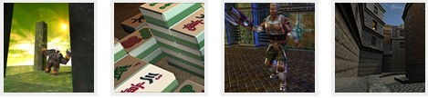

Este curso foi elaborado utilizando-se o
Dev-C++ versão 4.9.9.2
da Bloodshed no ambiente Windows 7.
Módulo 02: Curso completo de linguagem C++
Gameprog - Escola de programação de jogos digitais
Contato: gameprog.br@gmail.com
cppvip.html
>>
Index
01.O primeiro programa
02.Tipos de dados e declaração de variáveis
03.Exibindo os tipos de dados na tela
04.Entrada de dados via objeto cin
05.Funções
06.String em c++
07.Classes 1/5 - criando classes
08.Struct
09.Alocação de memória
10.Classes 2/5 - destrutor
11.Sobrecarregando operadores ( operator overload ) 1/2
12.Classes 3/5 - classes derivadas
13.Classes 4/5 - classes virtual e abstrata
14.Classes 5/5 - Herança múltipla
15.Sobrecarregando operadores ( operator overload ) 2/2
16.Type-casting (cast)
17.Classes genéricas
18.STL 1/5 - <vector>
19.STL 2/5 - <vector>
20.Lendo e escrevendo em arquivos textos
21.Lendo e escrevendo em arquivos binários
22.STL 3/5 <queue>
23.STL 4/5 <queue>
24.STL 5/5 <stack>
25.<list>
26.<map>
27.<deque>
28.<algorithm>
29.Tratamento de erros
30.Palavras finais
31. Patrocine a continuidade da Gameprog comprando os cursos técnicos:
Jogos\Aplicações 3d com C\C++\DarkGdk
Jogos\Aplicações 3d com C\C++ e
DirectX 9
Jogos\Aplicações 3d com C# e
DirectX 9 Gerenciado
www.gameprog.com.br

>>
Produzido por Gameprog: Jair Pereira - Fev/2006 - Junho/2013 © gameprog.br@gmail.com
http://www.gameprog.com.br